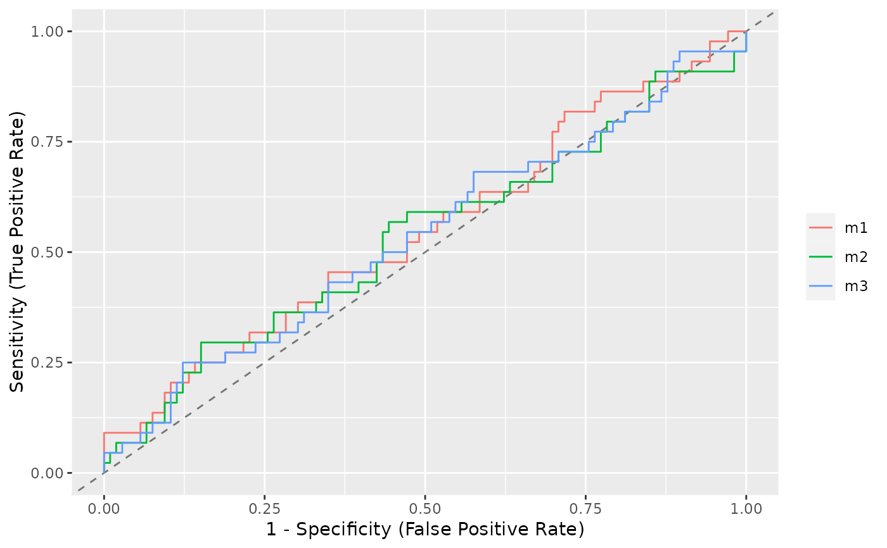

This function calculates a simple ROC curves of x/y coordinates based on response and predictions of a binomial model.
performance_roc(x, ..., predictions, new_data)A numeric vector, representing the outcome (0/1), or a model with binomial outcome.
One or more models with binomial outcome. In this case,
new_data is ignored.
If x is numeric, a numeric vector of same length
as x, representing the actual predicted values.
If x is a model, a data frame that is passed to
predict() as newdata-argument. If NULL, the ROC for
the full model is calculated.
A data frame with three columns, the x/y-coordinate pairs for the ROC
curve (Sensitivity and Specificity), and a column with the
model name.
There is also a plot()-method implemented in the see-package.
library(bayestestR)
data(iris)
set.seed(123)
iris$y <- rbinom(nrow(iris), size = 1, .3)
folds <- sample(nrow(iris), size = nrow(iris) / 8, replace = FALSE)
test_data <- iris[folds, ]
train_data <- iris[-folds, ]
model <- glm(y ~ Sepal.Length + Sepal.Width, data = train_data, family = "binomial")
as.data.frame(performance_roc(model, new_data = test_data))
#> Sensitivity Specificity Model
#> 1 0.0000000 0.00000000 Model 1
#> 2 0.1428571 0.00000000 Model 1
#> 3 0.1428571 0.09090909 Model 1
#> 4 0.1428571 0.18181818 Model 1
#> 5 0.1428571 0.27272727 Model 1
#> 6 0.1428571 0.36363636 Model 1
#> 7 0.2857143 0.36363636 Model 1
#> 8 0.2857143 0.45454545 Model 1
#> 9 0.2857143 0.54545455 Model 1
#> 10 0.2857143 0.63636364 Model 1
#> 11 0.2857143 0.72727273 Model 1
#> 12 0.4285714 0.72727273 Model 1
#> 13 0.5714286 0.72727273 Model 1
#> 14 0.5714286 0.81818182 Model 1
#> 15 0.7142857 0.81818182 Model 1
#> 16 0.8571429 0.81818182 Model 1
#> 17 0.8571429 0.90909091 Model 1
#> 18 1.0000000 0.90909091 Model 1
#> 19 1.0000000 1.00000000 Model 1
#> 20 1.0000000 1.00000000 Model 1
roc <- performance_roc(model, new_data = test_data)
area_under_curve(roc$Specificity, roc$Sensitivity)
#> [1] 0.3766234
m1 <- glm(y ~ Sepal.Length + Sepal.Width, data = iris, family = "binomial")
m2 <- glm(y ~ Sepal.Length + Petal.Width, data = iris, family = "binomial")
m3 <- glm(y ~ Sepal.Length + Species, data = iris, family = "binomial")
performance_roc(m1, m2, m3)
#> # Area under Curve
#>
#> m1: 54.80%
#> m2: 53.41%
#> m3: 53.58%
# if you have `see` package installed, you can also plot comparison of
# ROC curves for different models
if (require("see")) plot(performance_roc(m1, m2, m3))
